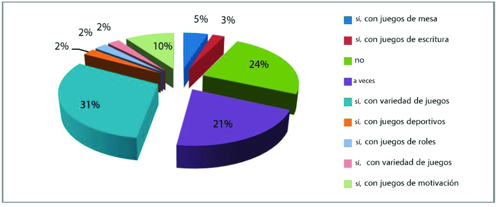

“Qué es nuestra imaginación comparada con la de un niño que intenta hacer un ferrocarril con espárragos” -
Jules Renard.
Seguramente ya hayas escuchado esta frase o sea la primera vez, pero tiene toda la razón y lo digo por
experiencia porque cuando tenía 5 años mi imaginación no tenía límites me la pasaba muy bien con un juguete,
aunque muchos pensaran que era algo aburrido y sé que igual a ti te pasaba, pero precisamente no hablarles
sobre lo magnífico que puede ser la imaginación de un niño, en este trabajo te hablare sobre los juegos
didácticos, te explicare ¿Para qué sirven? Y ¿Como es que influyen en la capacidad de concentración de los
niños y adolescentes?
Los juegos didácticos son muy Buenos ya que es una técnica de enseñanza a través de la diversión cuyo fin es
que los niños aprendan algo específico de forma lúcida los juegos didácticos fomentan la capacidad mental y
la práctica conocimientos en forma activa.
Karl Groos fue un filósofo y psicólogo que propuso una teoría instrumenta lista evolutiva del juego, a
finales del siglo XX se inicial los trabajos de investigación psicológica por parte de Karl Groos quien
define una de las tantas teorías acerca del juego en la cual caracteriza al juego como un adiestramiento
anticipado para futuras capacidades serias.
A partir de los estudios efectuados por filósofos, psicólogos y pedagogos han surgido diferentes teorías que
han tratado de dar diversas definiciones acerca del juego. Los juegos infantiles son los antecesores de los
juegos didácticos y surgieron antes de la propia ciencia pedagógica.
El juego es una actividad amena de recreación que sirve de medio para desarrollar capacidades mediante una
participación activa y afectiva de los estudiantes por lo que en este sentido la prensa y activos se
transforma de mi experiencia Feliz.
Estos juegos didácticos sirven para desarrollar actividades con la finalidad de enseñar a los niños un tema
específico y darle las habilidades necesarias para estudiar por tanto es una forma de educación que consiste
en aprender jugando.
El juego ha sido concebido socialmente como una actividad con la cual se gasta energía y se pasa el tiempo
sin tener en cuenta su carácter potenciador del aprendizaje. El presente artículo tiene como objetivo
identificar y reflexionar sobre la concepción que docentes y estudiantes tienen respecto al juego como
recurso didáctico en los procesos de enseñanza y aprendizaje. Se tienen como base los resultados de una
encuesta utilizada en el marco de un trabajo de investigación de corte cualitativo sobre el desarrollo de
habilidades comunicativas en un colegio de la ciudad de Bogotá. Para su estudio se diseñaron categorías de
análisis emergentes basadas en los objetivos de la investigación. Estos resultados mostraron que tanto
docentes como estudiantes valoran el uso del juego como actividad para promover el aprendizaje, pero no se
emplea debido a la percepción que se tiene del mismo. Insumos de este trabajo se han empleado para la
investigación del nivel doctoral sobre interculturalidad en la escuela.
Se realizo una encuesta a diferentes docentes en la cual se les pregunto ¿cómo define usted el juego
didáctico? cerca de la mitad de los docentes encuestados considera que el juego es sólo una actividad que
tiene como finalidad la diversión; también es una actividad lúdica que se emplea para desarrollar destrezas.
En términos generales, se ve al juego como una actividad que transmite algo y que sirve para desarrollar
alguna actividad social y humana.
En relación al potencial desarrollador que puede generar el juego en niños y niñas, un gran porcentaje de
los docentes (98%) consideró que sí servía para promover el desarrollo y el aprendizaje en los niños; las
personas que respondieron que tal vez (2%), argumentaron que, dependiendo de la aplicación y la finalidad
del juego, éste puede servir para promover el desarrollo de los educandos; de lo contrario, sólo serviría
para divertirse.
Es evidente que, aunque la mayoría de los encuestados han empleado metodologías lúdicas para sus prácticas
docentes en algún momento, otros no lo han considerado un elemento pedagógico. Entre las prácticas lúdicas
que se han empelado se encuentran los juegos de roles, de motivación, juegos de mesa, de escritura y
deportivos.

Si bien es cierto que el juego ha sido percibido social y culturalmente como una actividad para niños que
cumple sólo el objetivo de distraer, alegrar, o sólo para pasar el tiempo, en los contextos escolares se ha
reconocido su potencial en cuanto a mejorar los procesos de enseñanza-aprendizaje, evidenciando su aporte en
los resultados. Sin lugar a duda, el ambiente en el que cualquier sujeto se desarrolla incide en su manera
de pensar, de sentir y de proyectarse en el mundo. Es por ello que las percepciones de las personas son
fuertemente influidas por el medio social, y de esta manera, se comienzan a moldear acciones, en este caso,
las formas de enseñar y de aprender; de ahí la importancia de resaltar al juego como un fuerte recurso
didáctico que favorece la obtención de los objetivos de la escuela, no sólo en resultados académicos, sino
también en los resultados sociales, ya que permite mejorar las relaciones entre la comunidad.